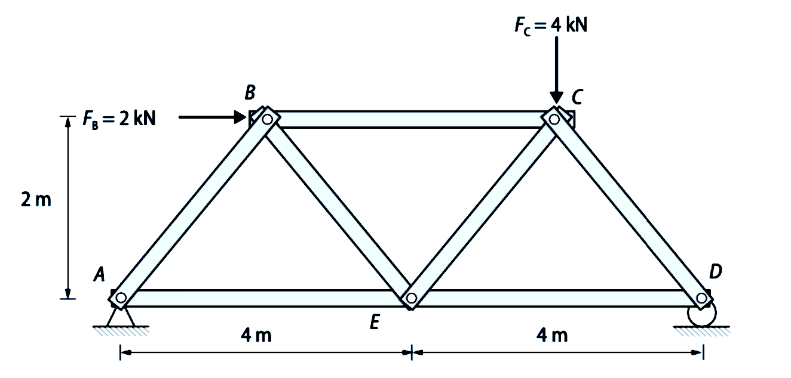
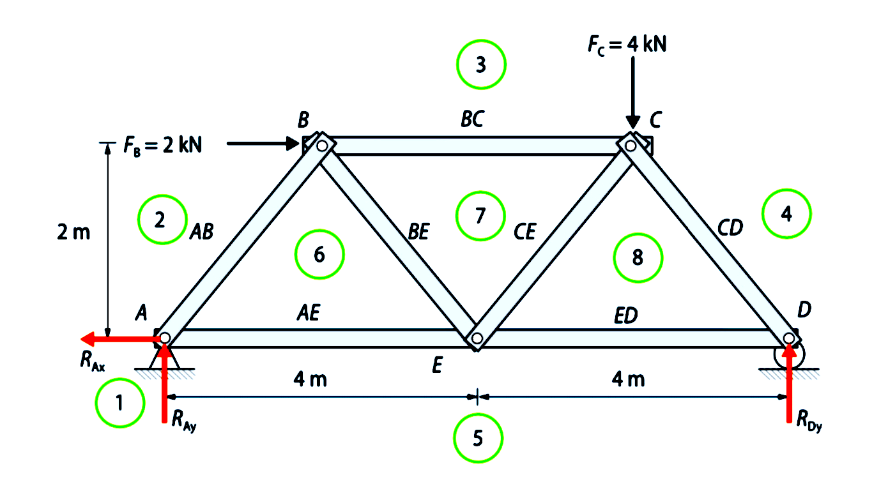
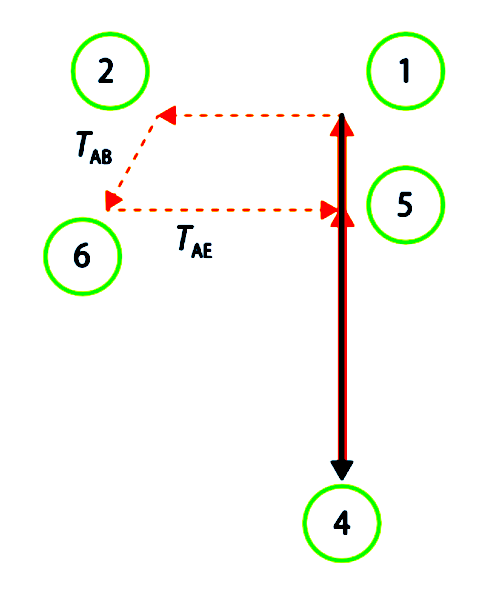
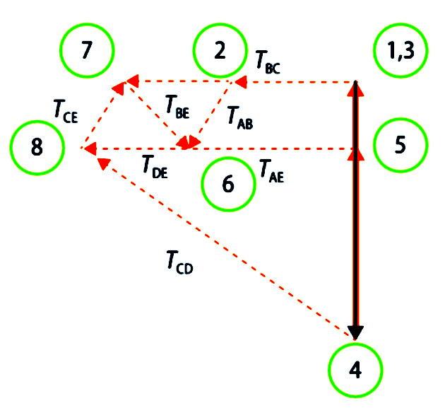

Método gráfico de Cremona
El método de Cremona es un procedimiento gráfico basado en el método de los nudos.
Consiste en lo siguiente:
- Dibujamos la estructura indicando las cargas y calculando las reacciones.
- Asignamos un número a cada zona del perímetro externo situada entre dos fuerzas (ya sean cargas o reacciones).
- Asignamos un número a cada zona interna situada entre las barras de la estructura.
- Dibujamos el poligono de fuerzas exteriores y reacciones.
- Consideramos cada nudo aisladamente, estableciendo dos ecuaciones de equilibrio para cada nudo. Comenzaremos por un nudo en el que concurran dos barras.
- Operamos con nudos sucesivos, eligiéndolos de forma que al resolverlos sólo existan dos barras cuyas fuerzas sean desconocidas.
- Determinamos las incógnitas teniendo en cuenta que las fuerzas exteriores e interiores constituyen poligonos cerrados.
- Iniciamos la construcción de gráficas. Dibujaremos polígonos cerrados de fuerzas para cada uno de los nudos, combinados de forma que cada fuerza actuante en una barra, que será común a dos nudos, solamente se represente una vez.
- Medimos las fuerzas en el polígono de Cremona y las pasamos a una tabla. Las tensiones que se acerquen al nudo serán de compresión y las que se alejen serán de tracción.
Como siempre, lo veremos mejor con un ejemplo resuelto.
Ejemplo resueltoEmpleando el método gráfico de Cremona, calcula las tensiones de las barras de la siguiente estructura de barras, donde A es un apoyo articulado y D es un apoyo libre.  Comprobamos la isostaticidad: Se trata de una estructura isostática exteriormente, ya que hay igual número de incógnitas (RAx, RAy, RDy) que de ecuaciones (\(\sum F_x = 0;\ \sum F_y = 0;\ \sum M = 0\)), y también es isostática interiormente, ya que el número de barras \( b = 7 = 2n-3 \) (siendo n el número de nudos: n = 5). Calculamos las reacciones:
\[ \sum M_A = 0 \Rightarrow R_{Dy}\cdot 8 - 4\cdot 6 - 2\cdot 2 = 0 \Rightarrow R_{Dy} = 3{,}5\,\text{kN} \] \[ \sum F_y = 0 \Rightarrow R_{Ay} = 4 - R_{Dy} = 0{,}5\,\text{kN} \] \[ \sum F_x = 0 \Rightarrow R_{Ax} = 2\,\text{kN} \] Numeramos las barras y asignamos un número a cada zona del perímetro externo situado entre dos fuerzas (acciones o reacciones) y luego a las zonas internas. Las zonas del perímetro serán, en este caso, 1, 2, 3, 4 y 5, mientras que las zonas internas serán 6, 7 y 8:  Ahora dibujamos el polígono de fuerzas externas, que estará formado por los números de las zonas externas (es decir, del 1 al 5). Para dibujarlo, operamos como sigue:
Sobre el diagrama de Cremona, empezamos a dibujar los números de las zonas internas, correspondientes a las barras que concurren en un nudo con sólo dos incógnitas. Para ello, recorremos el nudo en SENTIDO HORARIO: mirando, por ejemplo, el nudo A, la numeración es 1-2-6-5. Lo que estamos haciendo es sumar las fuerzas que actúan en cada nudo en un determinado orden. El n° 6 es el único que no está situado en el diagrama. Vemos cómo situarlo:
Midiendo sobre el diagrama la longitud de los segmentos, obtenemos la magnitud de los axiles de las barras AB y AE. Los esfuerzos que van hacia el nudo (en este caso A) son de compresión y los que se alejan son de tracción. En este caso resultan ser: TAB = 0,707 kN (compresión) TAE = 2,5 kN (tracción) Seguimos por el nudo B: dibujamos los segmentos de las barras del nudo B.
TBC = 3 k N (compresión) TBE = 0,707 kN (tracción) A continuación, seguimos con el nudo C:
Finalizamos con el nudo D:
El diagrama completo queda así: Los valores que faltaban por medir son estos: TCD= 4,95 kN (compresión) TCE = 0,707 kN (compresión) TED = 3,5 kN (tracción) |


 Directamente sobre el diagrama medimos las magnitudes de los axiles. Los que se acerquen al nudo B serán de compresión y los que se alejen serán de tracción:
Directamente sobre el diagrama medimos las magnitudes de los axiles. Los que se acerquen al nudo B serán de compresión y los que se alejen serán de tracción: